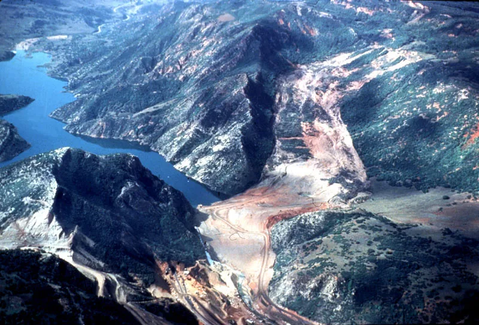
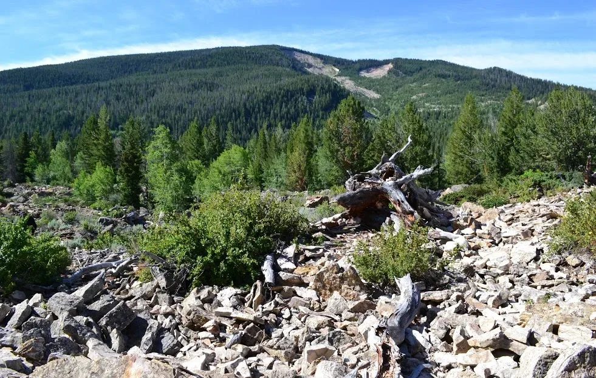
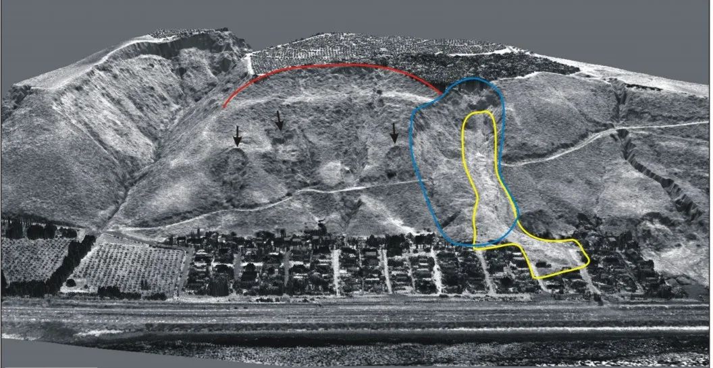
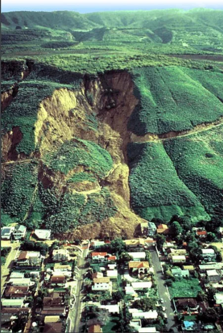
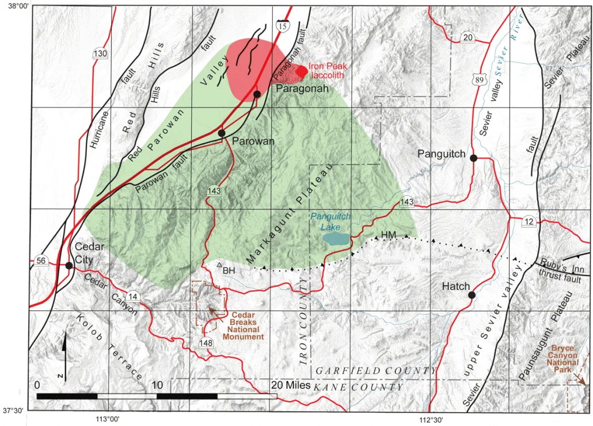
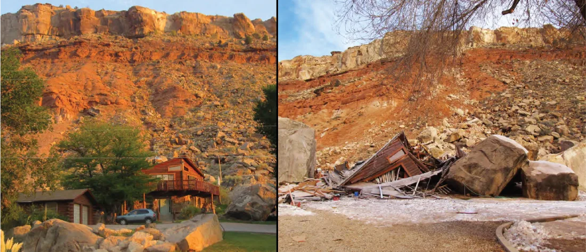
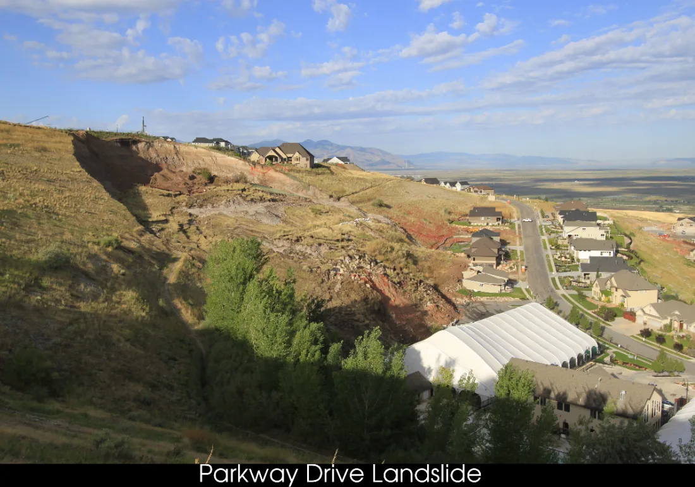
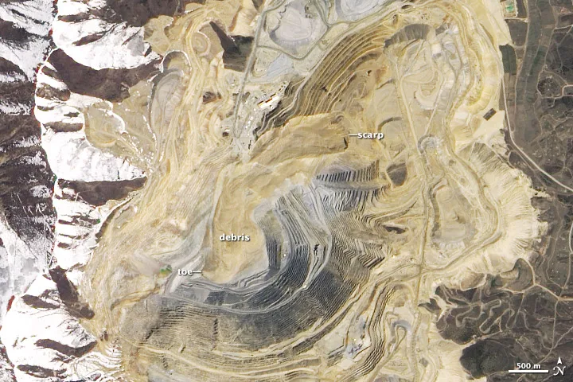

Learning outcomes
By the end of Chapter 10 you should be able to do each of these. The tag shows where it is covered.
- 10.1Explain what mass wasting is and why it occurs on a slope.
- 10.2Explain the basic triggers of mass-wasting events and how they occur.
- 10.3Identify types of mass wasting.
- 10.2.2Identify risk factors for mass-wasting events.
- 10.4Evaluate landslides and their contributing factors.
How to use this guide
Underlined words are key terms. Click one, or open Key terms at the bottom right, to read and search every definition from this chapter. The whole chapter rests on one balance: gravity pulls material down a slope, and the strength of the material holds it in place. Anything that steepens the slope or weakens the material tips that balance (10.1–10.2). The rest of the chapter names the kinds of movement (10.3) and walks through real landslides (10.4).

is the downhill movement of rock and soil material due to gravity. is often used as a synonym, but geologically it is the general term for mass wasting of fast-moving material; mass wasting covers all downslope movement, slow or rapid. What usually moves is loose material and the soil above it (). Moving blocks of bedrock are called rock topples, rock slides, or rock falls, depending on their main motion; movements of mostly liquid material are called flows. Rapid movement, such as a debris flow, is dangerous. Areas with steep topography and heavy rainfall, such as the California coast, the Rocky Mountain region, and the Pacific Northwest, are especially prone to hazardous mass wasting.
10.1Slope strength
Mass wasting happens when a slope fails: it is too steep and unstable for its material and conditions. comes down to two factors: the slope angle and the strength of the underlying material. Gravity is nearly constant at Earth's surface (it varies slightly with elevation and the density of the rock below).
10.1.1 Forces on a slope
A block of rock on a slope is pulled toward Earth's center by the (fg). This force splits into two parts (Figure 10.2):
- (fs), the driving force, pushes the block down the slope.
- (fn) pushes the block into the slope. It does not hold the block back by itself, but it produces friction, the resisting force, which is proportional to fn.
The material's resistance to sliding is its : friction (a fraction of fn) plus any cohesion that binds the grains. While the shear strength is greater than the shear force, the block stays put. If the slope gets steeper or the material gets weaker, the shear force wins and the block moves downslope. As the slope steepens, fg stays the same while fn shrinks and fs grows.
10.1.2 Angle of repose
The steepest angle at which rock and soil stay stable and do not move downslope is the , measured from the horizontal. At this angle the shear force is in equilibrium with the friction that the normal force produces; a slightly steeper slope lets the shear force win, and material starts to move. The angle varies with grain size, grain composition, and water content. Sand poured onto a flat surface cascades down the sides of the pile until it comes to rest at the angle of repose; the pile's base and height keep growing, but the angle of its sides stays the same (Figure 10.3, Figure 10.4).

10.1.3 Water and planes of weakness
Water can change the shear strength of a slope a great deal. It sits in , the empty spaces between grains in sediment or rock. Suppose dry sand has an angle of repose of 30°. A little water raises the angle, possibly to 60° or even 90°, as in a sandcastle on a beach. Too much water filling the pores lowers the shear strength and the angle of repose, and the sandcastle collapses.
in sedimentary rock (Unit 5) are . They matter most when they run parallel to the slope and least when they are perpendicular to it (Figure 10.5). Clay minerals along bedding planes can absorb water and become slick; a saturated shale bed can lower the shear strength of a whole rock mass and cause a landslide, as at Gros Ventre, Wyoming, in 1925 (10.4.1).

Check yourself: Section 10.1 quiz in the textbook ↗
10.2Mass-wasting triggers and mitigation
10.2.1 Triggers
A mass-wasting event often has a : a change that makes a landslide happen at a particular time. Triggers include rapid snowmelt, intense rainfall, earthquake shaking, volcanic eruption, storm waves, rapid stream erosion, and human activity such as grading a new road.
- More water in the slope is the most common trigger. It comes from fast-melting snow or ice or an intense rain event. Intense rain is more frequent in years, when the west coast of North America gets more precipitation than normal and landslides become more common. Earthquakes, earlier slope failures that dam streams, and structures that interfere with (buildings, roads, parking lots) can also send extra water into a slope. At Madison Canyon, Montana, in 1959, earthquake shaking may have weakened the slope.
- An . Erosion can steepen a slope naturally: flooding streams and storm waves cut into its base, and river undercutting was proposed as part of the trigger at Gros Ventre in 1925. People steepen slopes when they cut into the bottom of a slope to build a road or level a lot and dump the excavated material at the top (Figure 10.6). Done carefully, this is useful in land development; done badly, it can be devastating. At North Salt Lake, Utah, a former gravel pit regraded for a road and building lots may have been oversteepened, and in 2014 a slow-moving landslide destroyed a home at the bottom of the slope.
10.2.2 Mitigation
Because water is the main trigger, most landslide mitigation diverts and drains water away from slide areas. Tarps and plastic sheeting shed water off a slide body and stop ; drains dewater a landslide; shallow wells monitor the water content of some active slides. Two other approaches (Figure 10.7):
- Reinforce the slope. Long steel , drilled a few meters into a rock face, pin loose pieces in rockfall-prone areas. , a reinforced spray-on concrete, strengthens a slope face. adds weight at the toe of a slide and removes weight from its head. cuts a stair-step topography; it helps only when built at the right scale.
- Shield, catch, and divert the runout. Stretchable fencing catches falling rock to protect pedestrians and vehicles. Runout channels, diversion structures, and slow debris flows and steer them around structures. Some highways have tunnels (rock sheds) that carry landslides over the road.
Scale matters
Any shield or catch structure has to be engineered to a scale greater than the slide; otherwise it can fail with catastrophic loss of property and life.
Check yourself: Section 10.2 quiz in the textbook ↗
10.3Landslide classification and identification
Mass-wasting events are classified by type of movement and type of material (Table 10.1). Many types share features you can see at the surface: a , often a crescent on a cliff face; (uneven) ground; piles of , loose rock fallen from above; and a that covers the existing surface.
10.3.1 Types of mass wasting
| Type of movement | Bedrock | Soil types | |
|---|---|---|---|
| Mostly coarse-grained | Mostly fine-grained | ||
| Falls | Rock fall | — | — |
| Rock avalanche | Rock avalanche | — | — |
| Rotational slide (slump) | — | Rotational debris slide (slump) | Rotational earth slide (slump) |
| Translational slide | Translational rock slide | Translational debris slide | Translational earth slide |
| Flows | — | Debris flow | Earthflow |
| Soil creep | — | Creep | Creep |
The most common types are falls, rotational and translational slides, flows, and creep (Figure 10.8):
- : abrupt movements of rock that detach from steep slopes or cliffs along existing breaks such as fractures or bedding planes. The rock free-falls, bounces, and rolls. Gravity, mechanical weathering, and water control falls.
- (slumps): usually slow movement along a curved rupture surface.
- : often rapid movement along a plane of distinct weakness between the slide material and more stable material below. Slides are subdivided into rock, debris, or earth slides by material.
- Flows: rapid movements of loose material mixed with plenty of water, with long runouts at the base of the slope. A carries coarse material; an carries fine material. Some of the largest and fastest flows on land are (long-runout landslides); they are still poorly understood but travel long distances, even on bodies without much atmosphere, such as the Moon.
- : imperceptibly slow downslope movement of loose material such as soil, driven by a cycle of nighttime freezing and daytime thawing. Freezing ice pushes soil particles out, away from the slope; after the thaw, gravity pulls them straight down. The net effect is a slow drift downhill (Figure 10.9). Signs of creep are curved tree trunks, bent fences or retaining walls, tilted poles or fences, and small soil ripples or ridges. is a special type of creep: slow movement of soil lobes on low-angle slopes from seasonal freezing and thawing at high latitudes (sub-Arctic, Arctic, and Antarctic).

10.3.2 Parts of a landslide
Many landslides share identifying features, though there are many exceptions. A landslide removes material uphill and deposits it downhill, and structures or natural features that should be vertical or in place end up tilted or offset. The parts are shown in Figure 10.10 and listed in Table 10.2.
- Scarps. Like fault scarps, landslide scarps are steep ground exposed where the adjacent land has moved away. The marks the uphill extent of the landslide; it is the visible part of the rupture surface.
- : the boundary of the moving body. Material below it does not move. It is bounded on the sides by the and at the end by the toe.
- Toe: the end of the moving material, marking the (the maximum distance traveled). In rotational slides it is often a large, disturbed mound formed as the slide moves past its original rupture surface.
- Surface features of rotational and translational slides: (the toe moves forward faster than the rest, pulling the slide apart), (water filling depressions where movement blocked drainage), hummocky terrain (uneven ground), and (material pushed up into ridges at the margins).

| # | Part | What it is |
|---|---|---|
| 1 | Crown | The undisturbed material uphill of the main scarp. |
| 2 | Main scarp | Steep slope at the upper edge (head) of the landslide, made as the displaced material moved away from undisturbed ground; the visible part of the slide surface. |
| 3 | Flank | Undisplaced material beside the landslide; the left and right edges of the moving mass. |
| 4 | Main body | Part of the landslide that lies on the rupture surface. |
| 5 | Rupture surface | The lower boundary of the moving material, below the original ground surface; the surface along which material slides. |
| 6 | Tension cracks | Cracks where the middle of the slide is pulled apart; usually in the middle of the slide. |
| 7 | Separation surface | Part of the original ground surface now covered by landslide material. |
| 8 | Foot | Part of the landslide lying on the original ground surface (the separation surface). |
| 9 | Toe | The downhill end of the slide, farthest from the main scarp. |
Check yourself: Section 10.3 quiz in the textbook ↗
10.4Examples of landslides
Famous landslides show how the factors in 10.1–10.2 combine. Table 10.3 at the end of this section sums them up.
10.4.1 Landslides in the United States
1925, Gros Ventre, Wyoming. On June 23, 1925, a 38 million m³ (50 million yd³) translational rock slide came down beside the Gros Ventre River (pronounced "grow vont") near Jackson Hole. Large boulders dammed the river and ran several hundred vertical feet up the opposite side of the valley. The created Slide Lake; in 1927 the lake rose high enough to destabilize the dam, which failed and sent a flood that killed six people downstream in Kelly, Wyoming.


Three factors combined: (1) heavy rain and fast snowmelt saturated the Tensleep Sandstone, so the shale of the Amsden Formation below lost its shear strength; (2) the river cut through the sandstone, oversteepening the slope; (3) soil on the mountaintop became saturated because of poor drainage. The bedding planes between the sandstone and the shale were parallel to the slope and gave little friction once the river undercut it. An earthquake may have been the final trigger.
1959, Madison Canyon, Montana. The magnitude 7.5 Hebgen Lake earthquake, the largest in recorded Rocky Mountain history, caused a destructive seiche on Hebgen Lake (Unit 9) and a rock avalanche that dammed the Madison River, forming Quake Lake. The avalanche ran hundreds of vertical feet up the other side of the valley; house-sized boulders still sit on the slope opposite where they started. It moved at up to 160.9 km/h (100 mph) and pushed an air blast through the Rock Creek Campground. Twenty-eight people died, most of them in the campground, where they remain buried. As at Gros Ventre, planes of weakness (here in metamorphic rock) were parallel to the slope.

1980, Mount St. Helens, Washington. On May 18, 1980, a magnitude 5.1 earthquake triggered the largest landslide in the historical record: 2.8 km³ (0.67 mi³) of material. The landslide was followed by the volcano's lateral eruption, and the eruption by volcanic debris flows called (Unit 4).
1995 and 2005, La Conchita, California. On March 4, 1995, a fast-moving earthflow damaged nine houses in this coastal community; a week later a debris flow in the same place damaged five more. Tension cracks at the top of the slide gave early warning in summer 1994 and widened during the wet winter; the likely trigger was unusually heavy rain and rising . In 2005, after 15 days of near-record rain, a rapid debris flow damaged 36 houses and killed 10 people. Vegetation rode intact on top of the flow, which suggests the mass was carried on a much more saturated, fluidized layer beneath (Figure 10.14).


La Conchita, two events
- 1994: surface tension cracks at the top of the slope; they widen over winter.
- March 1995: earthflow damages 9 houses; a week later a debris flow damages 5 more. Trigger: heavy winter rain and rising groundwater.
- 2005: rapid debris flow after 15 days of near-record rain; 36 houses damaged, 10 people killed.
- Lesson: the whole bluff sits inside an ancient landslide, and slides there recur when it is very wet.
2014, Oso, Washington. On March 22, 2014, about 18 million tons (10 million yd³) of material moved at 64 km/h (40 mph) for nearly 1.6 km (1 mile) and dammed the North Fork of the Stillaguamish River. It covered 40 homes and killed 43 people in the Steelhead Haven community, a volume like 600 football fields buried 3 m (10 ft) deep. The winter of 2013–2014 had almost double the average precipitation, and the valley had a history of many landslides, though earlier ones had been small.


Yosemite National Park rock falls. Yosemite's steep cliffs have frequent rock falls. Fractures from tectonic stress and , widened by , can free house-sized blocks of granite from the cliff faces. The park models potential runout to assess the risk to its millions of visitors.
10.4.2 Utah landslides
Markagunt Gravity Slide. About 21–22 million years ago, one of the largest land-based landslides yet found in the geologic record moved more than 1,700 km³ (408 mi³) of material in one relatively fast event, over an area the size of Rhode Island, from near Cedar City to Panguitch (Figure 10.18). The evidence: and conglomerates (Unit 5), glassy (Unit 6), slip surfaces like faults (Unit 9), and dikes. It was probably material released from the side of a growing (Unit 4) after an eruption-related earthquake.

1983, Thistle. From April into May 1983, a slow-moving landslide traveled 305 m (1,000 ft) downhill and blocked Spanish Fork Canyon with an earthflow dam 61 m (200 ft) high (Figure 10.1). Flooding upstream in the Soldier Creek and Thistle Creek valleys submerged the town of Thistle. A spillway kept the new lake from breaching the dam, a tunnel later drained it, and the river still flows through that tunnel. Relocating the rail line and US-6 cost more than $200 million.
2013, Rockville rock fall. In December 2013, a 2,700-ton (1,400 yd³) block of Shinarump Conglomerate fell from the Rockville Bench cliff near Zion National Park, landed on the 35° slope below, and broke into large pieces that kept rolling at high speed. They destroyed a house 375 ft below the cliff and killed two people inside. Earlier rock falls in the area are mapped in Figure 10.20.


2014, North Salt Lake. In August 2014, after a particularly wet period, a slow-moving rotational landslide destroyed one home and damaged nearby tennis courts (Figure 10.21). Residents had seen ground cracks near the top of the slope at least a year earlier. Easily drained sand and gravel over less permeable clay (weathered from volcanic ash), plus recent regrading of the slope, may have contributed; local heavy rain seems to have been the trigger. The slope was partly regraded, but parts moved again in January 2017. Nearby, residents reported damage to homes from 1996 until 2012, when 18 homes became uninhabitable and were removed; the vacant area is now a geologic park.

2013, Bingham Canyon copper mine. At 9:30 p.m. on April 10, 2013, more than 65 million m³ of steep terraced mine wall slid into the engineered pit of Bingham Canyon , one of the largest historic landslides not associated with a volcano. The mine operator's radar systems warned that the wall was moving, so no one died and property losses were limited (Figure 10.22, Figure 10.23).


| Event | Type | Causes and trigger | Impact |
|---|---|---|---|
| Gros Ventre, WY, 1925 | Translational rock slide | Saturated shale under sandstone; bedding parallel to slope; river undercutting; maybe an earthquake | Dammed river; dam failed in 1927, flood killed 6 |
| Madison Canyon, MT, 1959 | Rock avalanche | M7.5 earthquake; foliation parallel to slope | 28 killed; Quake Lake formed |
| Mount St. Helens, WA, 1980 | Landslide, then eruption and lahars | M5.1 earthquake | Largest historical landslide, 2.8 km³ |
| La Conchita, CA, 1995 and 2005 | Earthflow, debris flows | Heavy rain, rising groundwater | 2005: 36 houses damaged, 10 killed |
| Oso, WA, 2014 | Landslide (debris) | Winter with nearly double average precipitation; slide-prone valley | 43 killed, 40 homes covered; river dammed |
| Yosemite, CA | Rock falls | Tectonic and exfoliation fractures widened by frost wedging | Ongoing risk to visitors; runout modeled |
| Markagunt, UT, 21–22 Ma | Gravity slide | Flank of a growing laccolith; eruption-related earthquake | Over 1,700 km³ moved |
| Thistle, UT, 1983 | Slow earthflow | (Not given in the chapter) | River dammed, town flooded; over $200 million |
| Rockville, UT, 2013 | Rock fall | Block of conglomerate fell from a cliff | House destroyed, 2 killed |
| North Salt Lake, UT, 2014 | Slow rotational slide | Sand and gravel over clay; regrading; heavy rain | 1 home destroyed; reactivated 2017 |
| Bingham Canyon, UT, 2013 | Mine-wall slide | Steep terraced pit wall | Over 65 million m³; no deaths thanks to radar warning |
Check yourself: Section 10.4 quiz in the textbook ↗
Summary
Mass wasting is all downhill movement of rock and soil due to gravity. It happens when a slope is too steep to stay stable with its material and conditions; loose rock and soil (regolith) are what usually move. Slope stability depends on the slope angle and the shear strength of the material. Events are triggered by changes that oversteepen slopes or weaken them: rapid snowmelt, intense rain, earthquake shaking, eruptions, storm waves, stream erosion, and human activity. Excess water is the most common trigger. Events are classified by movement and material and share surface features; the most common are rock falls, slides, flows, and creep. Movement ranges from slow to dangerously rapid. Studying past events helps predict where and how landslides will happen and how to protect people.
Quick recap
- fg is constant; steepening the slope raises fs (driving) and lowers fn, and with it the friction (resisting force) that is proportional to fn.
- Angle of repose = steepest stable angle; depends on grain size, composition, and water.
- A little water strengthens sand (sandcastle); too much weakens it.
- Bedding or foliation parallel to the slope = unstable (Gros Ventre, Madison Canyon).
- Triggers: water (most common), oversteepening, shaking. Mitigation: drain water, reinforce, or shield, catch, and divert.
- Falls (free fall) · rotational slides (curved surface) · translational slides (planar surface) · flows (water-rich) · creep (freeze–thaw, very slow).
- Landslide anatomy: crown → main scarp → main body over the rupture surface → foot → toe; flanks on the sides.
Check yourself: Chapter 10 review quiz in the textbook ↗
Resources
Fact-check notes
Each fact in this guide comes from Chapter 10. These notes flag places where the chapter simplifies, has a typo, or differs from other reliable sources. The guide keeps the chapter's values in the main text.
| Chapter says | Check |
|---|---|
| The chapter says the normal force (friction) resists the shear force, and that at the angle of repose the shear force equals the normal force. | Corrected in this guide. The resisting force is friction, which is proportional to the normal force but is not the normal force (it is a fraction of fn, plus any cohesion), so material slides when fs exceeds that resistance, not fn itself. That is why the angle of repose is often near 30–35° for dry sand rather than the 45° at which fs = fn (Steven Earle, Physical Geology, BCcampus, CC BY). The slider in Figure 10.2 shows only the two components. |
| "Shockcrete" | Typo: the material is shotcrete (sprayed concrete). |
| Creep is caused by nighttime freezing and daytime thawing. | That is one cause. Other references add wetting and drying and warming and cooling cycles, which also swell and shrink soil (USGS Landslide Handbook, 2008). |
| 1959 Hebgen Lake earthquake, magnitude 7.5; 28 killed. | USGS gives M7.3 (its event page now lists 7.2); the University of Utah lists 7.5. The 28 deaths are the total for the earthquake; most occurred in the Madison Slide. |
| Mount St. Helens landslide, 2.8 km³ (0.67 mi³). | USGS usually gives about 2.5 km³ (0.6 mi³) for the 1980 debris avalanche. Both agree it is the largest landslide in recorded history. |
| Oso slide "extended for nearly a 1.6 km (1 m)". | Typo: 1 mile. USGS gives a volume of about 8 million m³ (about 10 million yd³), matching the chapter. |
| Bingham Canyon, more than 65 million m³. | Matches Utah Geological Survey and NASA Earth Observatory reports (about 165 million tons). In the textbook's comparison figure the "after" image is dated May 2, 2013, after the April 10 slide. |
| Section 10.3 quiz option "Transitional slide". | Typo for translational slide. |
| Pseudotachylyte, lidar, check dam, landslide dam. | Not defined in the chapter; the key-terms panel defines them from the USGS Landslide Handbook and standard geology references. |
Credits
Content summarized from An Introduction to Geology, Chapter 10, © 2017 Chris Johnson, Matthew D. Affolter, Paul Inkenbrandt, and Cam Mosher, licensed CC BY-NC-SA 4.0. Every photo and drawing taken from the chapter is credited in its caption, with the license given in the chapter's media attributions.
- Drawn for this guide from the chapter's descriptions: forces on a slope (Figure 10.2, after Paul Inkenbrandt's figures), growing sand pile (Figure 10.4), oversteepening by grading (Figure 10.6), mitigation methods (Figure 10.7), and creep (Figure 10.9). The numbers on Figure 10.10 rebuild the textbook's interactive figure; its before-and-after slider is shown as Figure 10.22 and Figure 10.23 because the two NASA images cover different areas.
- Outside sources are named where they are used: USGS (Landslide Handbook; Hebgen Lake, Mount St. Helens, and Oso pages), Utah Geological Survey, NASA Earth Observatory, and Steven Earle, Physical Geology (BCcampus, CC BY).